![[*]](footnote.png) .
.
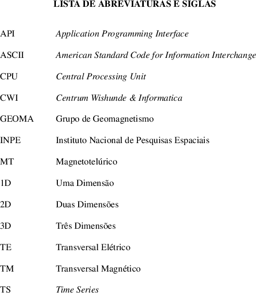
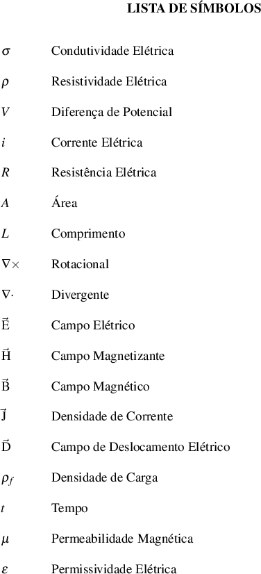
utf8
Apoiado nas leis de Maxwell o método MT (Magnetotelúrico) usa a Terra como um condutor ôhmico e as variações do seu campo magnético gerado por ventos solares [Parkinson 1983] e tempestades equatoriais que interagem com a ionosfera para investigar as estruturas internas da Terra e litologias rasas.
No Brasil o uso do método MT é insipiente, restrito ao meio acadêmico e pouco utilizado na indústria, porém, pode ser bem aplicado na prospecção de hidrocarbonetos, sendo a sua resolução melhor que a magnetometria e gravimetria, também em estudos crustais apoiando a sismologia devido sua grande profundidade de investigação, mas o alto custo de processamento e a falta de softwares para trabalhar com os dados tem sido algumas das causas do pouco uso.
Esse trabalho foi inicialmente pensado para tornar o MT mais difundido, desenvolvendo um software com interface gráfica e distribuição livre. Assim o projeto nasceu com esse propósito, compreendendo o processamento de dados MT desde a coleta até a primeira visualização dos dados, como: escolha de bandas, plotagem de pseudo-secções em função de resistividade e fase, além de fazer tratamentos estatísticos e processamento robusto proposto por egbert97 egbert97.
O programa será construído usando a linguagem Python [Drake 2018] e a construção da interface gráfica será desenvolvida usando a API Kivy [KIVY ORGANIZATION 2018] dentre outros pacotes. A escolha por essa linguagem foi a vasta quantidade de pacotes, o crescente número de pessoas implementando e a facilidade da construção do código.
O objeto de estudo desse trabalho é o desenvolvimento de um Software Livre, em Python para tratamentos e processamentos de dados magnetotelúrico .
O MT é um método geofísico que trabalha com propriedades eletromagnéticas, essa característica torna o processamento dos dados extremamente trabalhoso e com alto custo computacional, o trabalho então propõe:
.
Esse trabalho foi pensado para auxiliar a expansão do magnetotelúrico , hoje existem vários programas proprietários para processamento destes tipos de dados, mas, são programas de alto custo e fechados, isto é, não possuem transparência dos fluxos de processamentos dentro do programa. O processamento hoje usado na maioria dos trabalhos usam como base os algoritmos propostos por egbert97 para a primeira fase de processamento e a rotina To Jones [Egbert 1997] para compilação dos dados em arquivos manipuláveis.
Esses processos atualmente são feitos através de linhas de comando unindo diversos programas separados, o que torna o procedimento muito instável provocando diversos tipos de erros além de não prever outros.
O programa proposto aqui pretende ser escrito em apenas uma linguagem e utilizar pacotes nativamente compatíveis, o que prevê erros de compatibilidades e torna a manutenção do código mais fácil, uma vez que estes não serão compilados.
Outra forma de beneficiar a utilização do programa se dará pela construção de uma interface gráfica para todos os processos, tornando assim mais fácil utilizar e prevenir erros provocados pelo usuário.
O método magnetotelúrico proposto por tikhonov50 tikhonov50 e cagniard53 cagniard53, usa as propriedades eletromagnéticas para estudar a distribuição de resistividade elétrica na crosta, podendo variar a sua investigação de dezenas de metros a dezenas de quilômetros.
As flutuações no campo magnético terrestre geram campos elétricos na alta atmosfera que induzem correntes magnéticas.
As ondas eletromagnéticas penetram no interior da Terra na forma de ondas planas ortogonais que induzem novas correntes chamadas de corrente telúricas que trazem informações das características físicas das litologias [Tikhonov 1950] e [Cagniard 1953].
Uma das características é a modulação da frequência, causada por diferentes tipos de rochas e estruturas, esse fenômeno é diretamente relacionado a resistividade elétrica do meio. As frequências das ondas são baixas variando de 1 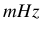 à 10 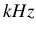.
Ondas com frequências menores que 1 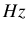 tem origem nos ventos solares que interagem com o campo magnético terrestre, já ondas com frequências maiores de 1 são provocadas por tempestades equatoriais. Para o estudo do magnetotelúrico são feitas as seguintes suposições:
Para o magnetotelúrico a propriedade de investigação e contraste é a condutividade elétrica (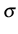) ou resistividade elétrica () sendo essa o inverso da primeira.
A resistividade elétrica é uma propriedade particular de um determinado material, ou seja, a partir de uma resistividade elétrica podemos estimar a qual material ela pertence.
Em 1827, Georg Ohm verificou de forma empírica que aplicando uma diferença de potencial em um material, esse gera uma resistência à passagem de corrente, essa relação é chamada de lei de Ohm (equação 4.1) [Hayt and Buck 2013].
Onde 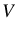 é a diferença de potencial (Volts - V), é a corrente (Ampère - A) e 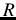 é a resistência (Ohms - ), materiais que obedecem essa lei são chamados de materiais ômicos.
A Terra pode ser considerada como um material ôhmico. No entanto para a investigação geofísica a resistência não é uma propriedade viável, visto que depende muito da geometria do problema, assim foi proposto a resistividade elétrica, onde, um mesmo material terá a sua resistividade elétrica igual, independente da geometria.
A figura 1 mostra um circuito para se obter a resistividade elétrica de um material, sendo A a área [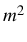], R a resistência [], L o comprimento [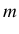] e a resistividade elétrica dada em 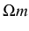.
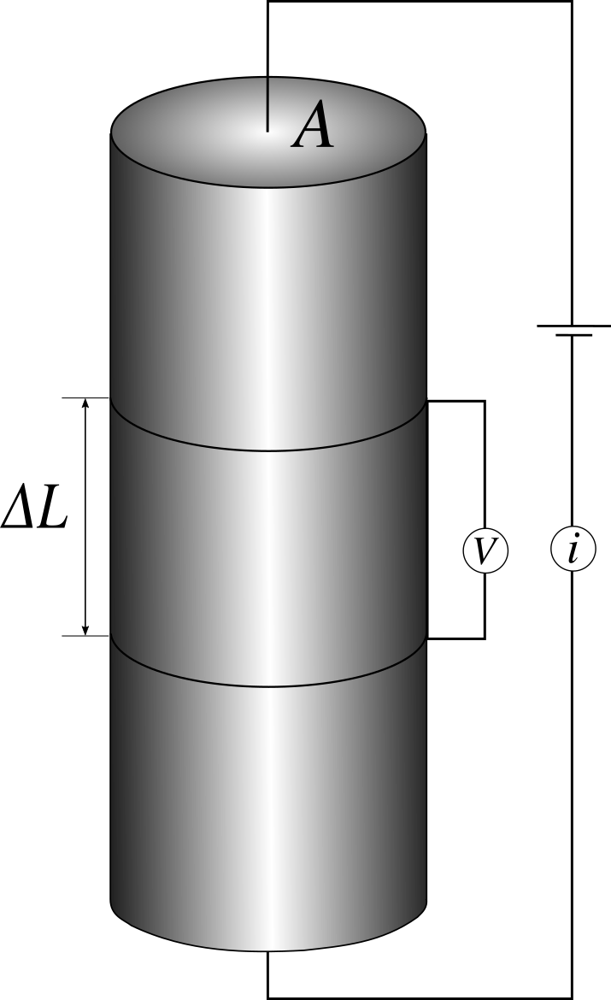
Adaptado telford, telford |
A figura 2 mostra a distribuição de resistividade elétrica para diversos materiais geológicos. Portanto podemos identificar a partir de um contexto geológico quais litologias pertencem a cada resistividade elétrica encontrada.
Por exemplo, uma litologia que tenha resistividade elétrica em torno de 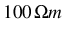 e outra com 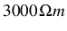 pode ser caracterizada como um arenito e uma rocha ígnea respectivamente.
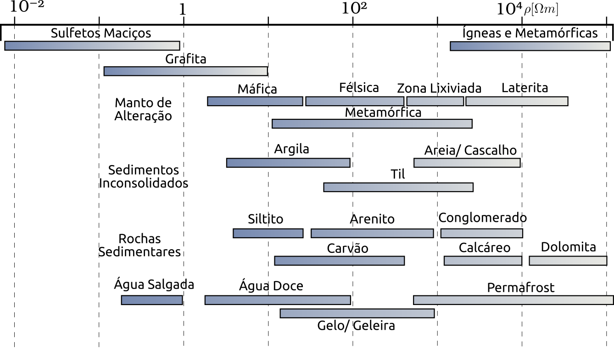
Adaptado eletromag_met, eletromag_met |
Os campos podem ser descritos pelas seguintes equações:
| 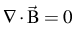 | (5) |
Onde,
Obedecendo as relações de contorno para um meio isotrópico temos as seguintes relações (equações constitutivas):
![\begin{table}\begin{tabular*}{1cm}{p{0.05cm}p{0.1cm}p{10cm}}
{\footnotesize$\mu...
...ootnotesize Condutividade Elétrica [$S/m$]} \\
\end{tabular*}\par
\end{table}](img28.png)
Cada escalar das equações anteriores são características que dependem do meio em que a onda se propaga. Para a crosta 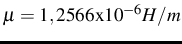 e 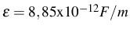; esses parâmetros funcionam como tensores em um meio anisotrópico que variam em função do tempo. Considerando para os trabalhos de investigação o meio supõe-se ser isotrópico, assim, tornando estáticos os tensores.
Através das propriedades dos meios isotrópicos podemos reescrever as equações 4.3 e 4.4 usando as equações constitutivas 4.7, 4.8 e 4.9.
Derivando a equação 4.11 no tempo, multiplicando por 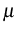 e usando a equação 4.10 temos:
| 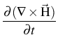 | 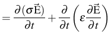 | |
| 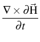 | 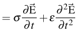 | |
| 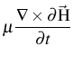 | 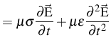 | |
| 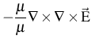 |
Usando a identidade vetorial:
| 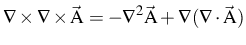 | (13) |
Podemos reescrever a equação 4.6 considerando, que para meios homogêneos e isotrópicos não há troca de carga entre ele e a densidade de carga, 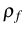, é zero assim:
| (14) |
Portanto:
Substituindo [4.15] em [4.12] temos:
| 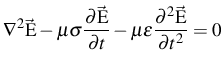 | (16) |
De forma an√°loga podemos verificar que:
| 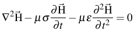 | (17) |
Seguindo a dedução das equações como demostrado no trabalho de didana2010 em didana2010, podemos verificar que:
Onde 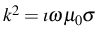.
Os coeficientes 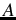 e 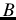 são parâmetros e ajustem e dependem da condição de contorno dos dados.
O tensor impedância é descrito em função da frequencia angular, através da transformada de Fourier [Bracewell and Bracewell 1986].
A transformada de Fourier gera um n√∫mero complexo, portando o tensor recebe um valor real e outro imagin√°rio.
| 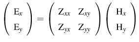 | (20) |
Para o modelo de Terra 1D considera-se que a resistividade elétrica varia apenas em uma direção, em outras palavras, a resistividade elétrica varia com a profundidade. A matriz impedância para esse modelo tem a sua diagonal principal igual a zero.
| 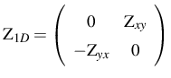 | (23) |
Isso significa que a resistividade elétrica nas duas direções são iguais porem a fase entre elas são opostas.
Substituindo [4.18] e [4.19] na equação 4.21, obtemos:
Elevando o módulo ao quadrado da equação 4.24, temos:
| (25) |
Portanto:
 |
(26) |
A onda sofre influência de todas as camadas que percorre, sendo assim, a resistividade elétrica é classificada como aparente nos pontos em que ela representa o valor de todo o pacote, assim:
| (27) |
A fase do tensor impedância é definido como sendo o arco tangente da parte imaginária sobre a parte real na matriz complexa do tensor.
| (28) |
A equação 4.29 mostra a relação entre a profundidade ( , frequência () e a resistividade aparente ( ), essa profundidade é chamada de skin-depth [Hayt and Buck 2013].
Essa relação mostra que para uma mesma profundidade variando à resistividade aparente a frequência é alterada.
O modelo de Terra 2D é caracterizado pelo contato vertical entre dois meios de diferentes resistividades elétricas. Se o contato é paralelo ao eixo então é definido a direção do strike no eixo , a direção deve ser paralela ao plano de contato, ou seja, onde a condutividade elétrica é constante.
| (30) |
| (31) |
 |
(32) |
A matriz do tensor impedância é então calculada com todos os termos.
| (33) |
Neste capítulo será discutido e mostrado como vinham sendo processados os dados magnetotelúrico desde a etapa de coleta dos dados, até a produção de pseudo-secções.
Os programas utilizados são disponibilizados pelo site mtnet, mtnet. O site MTnet é uma comunidade que une diversos programas para processamento de dados MT, para fins acadêmicos
dentro do espectro eletromagnético.
A escolha da taxa de aquisição dos dados é um fator importante, pois há um grande intervalo de períodos. Por exemplo, a frequência de 1 tem o período equivalente a 1000 , ou seja, leva cerca de 17 minutos para que seja registrado um comprimento de onda em contra partida para 10 leva apenas 1 milissegundo.
Para que seja contornada a problemática da aquisição são realizadas varias tomadas chamadas de bandas e cada uma é configurada com uma taxa de aquisição diferente, a tabela 5.1 mostra as taxas de aquisições frequentemente usadas.
Como discutido na subsecção 4.4.1 para se obter a matriz impedância é necessário efetuar a aquisição das componentes dos campos elétricos e magnéticos separadamente.
Essas componentes são registradas em e em para os campos elétricos e magnéticos respectivamente e são chamadas de séries temporais. As cinco séries temporais ( ) são armazenadas em um arquivo binário com extensão padrão TS.
Como visto anteriormente (subsecção 4.4.1) a matriz impedância é obtida através das componentes . Porém as mesmas devem estar no domínio da frequência angular, discutido na secção 5.1. As séries temporais são obtidas com taxas de aquisições diferentes, isso implica que o tempo de leitura também será diferente, esse fato propicia que sejam feitas várias leituras com mesma taxa no mesmo ponto, essas leituras são chamas de rodadas.
O pré-processamento compreende essas etapas: converter os dados de binários para ASCII, para que possam ser manipulados facilmente; utilizar a transformada de Fourier para mudar o domínio dos dados de tempo para frequência angular; filtrar e escolher as melhores rodadas, ou seja, as séries que tiverem a maior coerência e menor ruído.
A figura 5 ilustra todas as etapas de pré-processamento e as subsecções a seguir mostra quais os programas utilizados atualmente e como eles atuam sobre os dados.
O comando ats2asc [Egbert 1997] é usado para a conversão dos dados, ele efetua a leitura do arquivo, a conversão para ASCII e a separação do arquivo em diferentes diretórios.
A separação do arquivo é dada pela seguinte forma:
O programa Dnff faz parte do pacote EMTF [Egbert 1997] desenvolvido por Gary D. Egbert, o pacote EMTF compõem rotinas de mudança de domínio dos dados e processamentos estatísticos para remoção de ruídos.
O Dnff é responsável por fazer a transformada discreta de Fourier sobre os dados e aplica os coeficientes de Fourier que ajustam os problemas de reverberação.
O programa TranMT também faz parte do pacote EMTF e é responsável por fazer os tratamentos estáticos sobre o dado, removendo outliers (pontos muito distantes da curva de tendência) e aumentar a relação sinal/ruído.
A saída do programa TranMT são arquivos ZSS (formato padrão adotado por Egbert) contendo os valores de impedância e fase para cada janela. As janelas são como taxas de aquisições dentro dos arquivos obtidos em campo, essas podem ser configuradas pelo usuário ajustando a melhor representação dos dados em função da taxa de amostragem de aquisição em campo.
O programa Tojones [Jones 1994] extrai as informações dos arquivos ZSS de diferentes janelas e mescla os mesmo em um único arquivo J-format, onde, esses arquivos são usados para plotar as pseudo-secções e outras rotinas como o Rho+ [Parker and Booker 1997] e programas de inversão.
O grupo Geoma do INPE (Institudo Nacional de Pesquisas Espaciais) oferece um treinamento para processamento do magnetotel√∫rico para alunos e colaboradores.
Os scripts oferecidos para o processamento MT foram desenvolvidos pelo Dr. Marcelo Banik de Pádua obtidos sobre comunicação privada pelo autor.
A natureza dos pacotes s√£o scripts escritos em Shell, Python, C++ que utilizam o programa GMT [NATIONAL SCIENCE FOUNDATION 2018] para plotagem dos gr√°ficos.
Os script auxiliam na utilização dos programas já citados, visto que a saída de um programa é a entrada do próximo. Um exemplo é o programa processamentoZ que prepara os dados para as rotinas Dnff e TranMT, ele ajusta os parâmetros necessários para esses programas e trabalha com os dados de forma padrão auxiliando o usuário na utilização dos pacotes.
O desenvolvimento do software, chamado de PampaMT, foi baseado na filosofia de Software Livre [FREE SOFTWARE FOUNDATION 2018] onde o código fonte será liberado e distribuído para a comunidade geofísica. A linguagem base escolhida para o projeto foi o Python, visto as vastas bibliotecas para trabalhar com dados científicos e a simplicidade da implementação do código.
Criada nos anos 80 por Guido Van Rossum no CWI (Centrum Wishunde & Informatica) em Amsterdã, Holanda a linguagem Python foi idealizada no grupo de desenvolvimento da linguagem ABC do CWI, onde rapidamente começou a se destacar.
Na década de 90 foi criada a Python Software Activity que começou a cuidar dos interesses da linguagem, nesse período apenas o criador Guido Van tomava as decisões e cuidava do desenvolvimento. Finalmente em 2001 é fundada a Python Software Foundation que mantém a linguagem e todos os direitos sobre ela [Drake 2018].
Python é uma linguagem de alto nível onde seu código deve ser organizado favorecendo a interpretação e sendo ao mesmo tempo simples.
Exemplos de código Python:
Mostrar conte√∫do na Tela:
Como comentado, o código tem fácil leitura. Para imprimir um conteúdo na tela, por exemplo,
podemos simplesmente usar o comando print, aproximando muito da língua inglesa.
pcr>>> gray# Coment√°rios
>>> OliveGreenprint ('Hello World')
Hello World(6.1.1)
Operações Matemáticas:
As variáveis no código não precisam ser declaradas para um tipo específico (Ex.: float, int, string), como em outras linguagens, o que deixa o código mais fluido.
pcr>>> a = 2
>>> b = 5
>>> OliveGreenprint(a + b)
7
>>> OliveGreenprint(b / a)
2.5
(6.1.2)
Importando Módulos:
Módulos são estruturas que podemos importar objetos de um código a outro,
no script 6.1.3 importamos o valor de que esta contido na vari√°vel pi dentro do pacote math.
pcr>>> BurntOrangeimport math
>>>
>>> pi = math.pi
>>> OliveGreenprint(pi)
3.141592653589793(6.1.3)
A vasta quantidade de pacotes de terceiros para Python é o que faz a linguagem tão rica.
De fato, os
pacotes facilitam a implementação do código, por exemplo, se for preciso calcular o espectro de
frequência de um conjunto de dados, não será necessário implementar todo o algoritmo para efetuar o cálculo, resolver as integrais e assim por diante, mas sim podemos utilizar o pacote scipy e importarmos a função fftpack que já foi implementada e executar em nosso código, esse processo economiza tempo em desenvolvimento.
Kivy é um framework criado em 2010 pela KIVY ORGANIZATION [KIVY ORGANIZATION 2018] e Open Source para o desenvolvimento de interfaces gráficas, a escolha dessa interface foi a alta compatibilidade entre sistemas operacionais e todo o processamento nativo para desenhar a tela é feita no chip gráfico liberando então mais processamento pela CPU.
Kivy também é uma linguagem de programação que permite a criação da interface de forma mais fácil, similar ao QT [QT COMPANY 2018] ela usa uma linguagem de marcação e indentada onde as propriedades dos widgets (Objetos interativos com o usuário) são adicionadas colocando-as a baixo e com espaçamento de 4 espaços do widget.
Exemplo do Kivy dentro do código Python:
pcr>>> BurntOrangefrom kivy.app BurntOrangeimport App
>>> BurntOrangefrom kivy.uix.button BurntOrangeimport Button
>>>
>>> BurntOrangeclass Test(App):
>>> BurntOrangedef build(self):
>>> BurntOrangereturn Button(Bluetext=OliveGreen'Hello World')
>>>
>>> Test().run()(6.2.1.1)
SciPy é um ecossistema de ferramentas para processamento de dados científicos contando com ferramentes de manipulação de matrizes, plotagem de gráficos, interpolação dentro outras ferramentas [Jones et al. 2001].
O ecossistema é de código aberto e as principais ferramentas são: NumPy para trabalhos com vetores e matrizes, MatPlotLib são ferramentas para plotagem de dados e o próprio SciPy para interpolação, cálculo de espectro de frequência dentre outras.
A tabela 6.1 apresenta 9 pontos distribuídos numa matriz quadrada de ordem 3, onde, a posição (2,2) possui uma anomalia, o código 6.2.2.1 mostra como fazer a interpolação dos pontos e como plotar o resultado (figura 7).
Exemplo Numpy:
pcr>>> BurntOrangeimport Numpy BurntOrangeas np
>>>
>>> x = np.array([1,2,3,1,2,3,1,2,3])
>>> y = np.array([1,1,1,2,2,2,3,3,3])
>>> z = np.array([1,1,1,1,3,1,1,1,1])(6.2.2.1)
Exemplo SciPy:
pcr>>> BurntOrangefrom scipy BurntOrangeimport interpolate
>>> BurntOrangefrom scipy.interpolate BurntOrangeimport griddata
>>>
>>> xi = np.arange(x.min(), x.max(), .01)
>>> yi = np.arange(y.min(), y.max(), .01)
>>> xi,yi = meshgrid(xi,yi)
>>>
>>> gray# Interpolate
>>> zi = griddata((x,y),z,(xi,yi),Bluemethod=OliveGreen'cubic')(cont. 6.2.2.1)
Exemplo Matplotlib:
pcr>>> BurntOrangeimport matplotlib.pyplot BurntOrangeas plt
>>>
>>> plt.figure(1)
>>> plt.subplot(111)
>>>
>>> zn = np.arange(z.min(), z.max() + 0.01, .01)
>>>
>>> plt.plot(x, y, OliveGreen'kx')
>>> plt.contourf(xi, yi, zi, zn)
>>> plt.colorbar()
>>> plt.grid()
>>> plt.set_cmap(OliveGreen'jet')
>>> plt.show()
(cont. 6.2.2.1)
O PampaMT trabalhará com os dados seguindo os fluxos de processamentos comentado no capitulo 5, atualmente o maior consumo de tempo de processamento são destinados a essas etapas. O programa desenvolvido focará em melhorar o tempo de processamento, visualização dos dados e aprendizagem.
O fluxograma da figura 9 ilustra as etapas de inicialização pensados para o programa e como será a execução do pacote EMTF sobre os dados.
Como já discutido as etapas de processamento serão feitas através de interface gráfica e o programa processamentoZ será reescrito para aumentar a compatibilidade no fluxo.
O fluxograma da figura 8 mostra o processo principal do programa, onde o usu√°rio poder√°:
Após o Tojones é finalizado o processo, compreendendo então todas as etapas propostas no trabalho.
Também melhorar a compatibilidade com os diversos sistemas operacionais e distribuir sobre a licença de software livre para a comunidade geofísica. O que deve possibilitar a expansão no magnetotelúrico na academia visto que qualquer pessoa terá acesso ao programa.
Ao final comparar os resultados obtidos com o programa em relação a forma que vinha sendo trabalhada até então. As principais comparações serão: tempo de processamento, visualização, tempo de aprendizagem para uso da plataforma, coerência entre resultados e manipulação da forma de visualização.